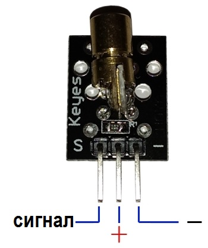
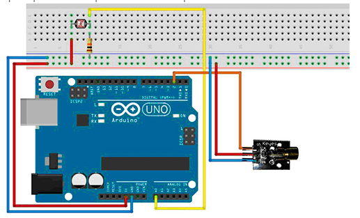

Модуль красного лазера KY-008
Содержит лазерный светодиод с цилиндрическим радиатором и пассивные компоненты, грубо обеспечивающие режим работы светодиода. Модуль лазера KY-008 создает небольшое световое пятно на противоположно расположенном объекте благодаря особым свойствам лазерного излучения. Луч виден в задымленном или пыльном помещении.
Модуль лазера (красный) применяется как излучающий компонент в фотореле, в которых между источником света и фотоприемниках расстояние измеряется в метрах. Такая схема расположения фотоприборов используется при подсчете переместившихся крупных объектов между источником и приемником. В охранных системах это получило название световой барьер. Среди других применений – лазерная указка, установки световых эффектов, где световое пятно перемещается с помощью зеркала.
Технические характеристики модуля KY-008:
- Цвет лазерного луча — красный.
- Напряжение питания — 5 В.
- Рабочий ток — менее 40 мА
- Мощность —5 мВт.
- Количество контактов для подключения — 3.
- Длина волны — 650 нм.
- Размер — 24 x 15 x 8 мм.
- Масса — 2 г.



Источники
роботехника18.рф - Как подключить лазерный модуль к Ардуино
arduino-tex.ru - KY-008 Лазерный модуль. Подключение к Arduino.